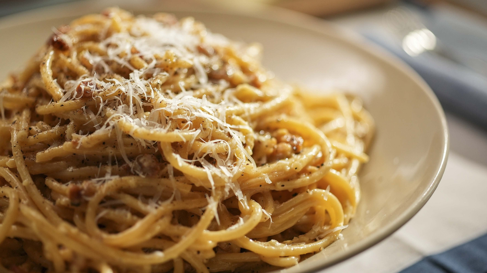

Bucatini Carbonara

This Bucatini Carbonara Recipe was inspired by Aziz Ansari on the show "Master of None." Aziz's character makes his own pasta and then creates this delicious dish for he and his girlfriend. This recipe is a tried and tested adapation of various carbonara recipes available online
Ingredients
- Garlic - 4 cloves
- 5 eggs - room temp
- Bucatini - 1 pound
- Bacon - 8 oz
- Grated Parmesan - 1 cup
- Onion, medium
Instructions
- Thinly slice bacon
- Add Bacon to skillet, cook medium-high heat for 10 minutes
- While bacon cooks, bring a pot of salted water to a boil
- Add bucatini to boiling water, cook 8-9 minutes or until al dente
- Dice onion and mince garlic
- After 10 minutes, add diced onion, cook 2-3 minutes until softened
- Add garlic, cook for 30 seconds, turn off heat
- Beat eggs with parmesan cheese
- Drain pasta and add to pan
- Slowly add egg/cheese mixture to pan, stirring vigorously to avoid eggs from scrambling on bottom of the pan
- Serve immediately, garnish with parsley and more parm, if desired